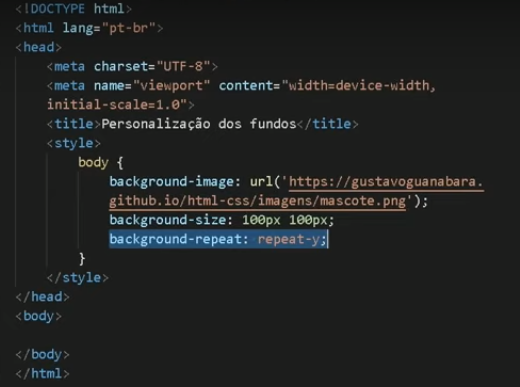

Usando imagens de sites como fundo
É possível utilizar imagens diretamente da internet em suas páginas. Para isso basta especificar o endereço do site onde fica a imagem. Para fazer isso basta usar o código abaixo:

Para alterar a forma como esta imagem aparece disposta na tela utilizamos os comandos:
- Background-size
- Onde ao alterar o tamanho aumentamos ou diminuimos a quantidade de itens na tela
- Background-repeat
- Onde podemos escolher as opções:
- y - repete a imagem verticalmente
- x - repete a imagem horizontalmente.
- no - Não repete a imagem
O resultado final é o que você pode ver no fundo desta página.
OBS: você fica preso ao site de origem da imagem, porém a velocidade de carregamento é bem mais alta.